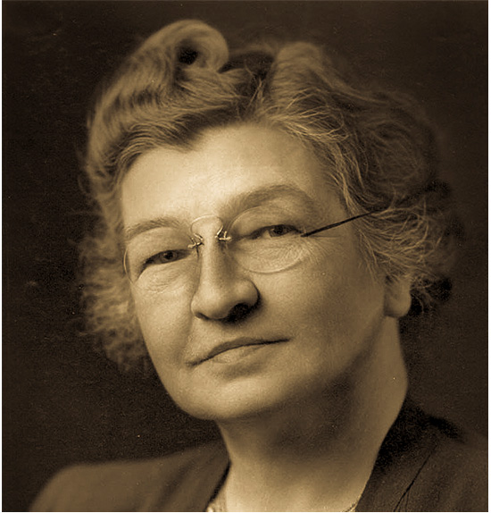
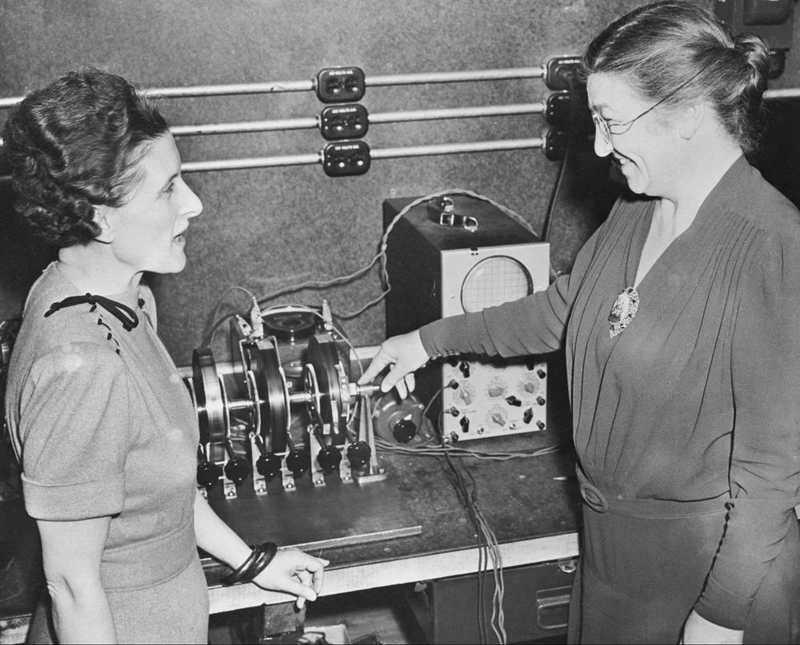
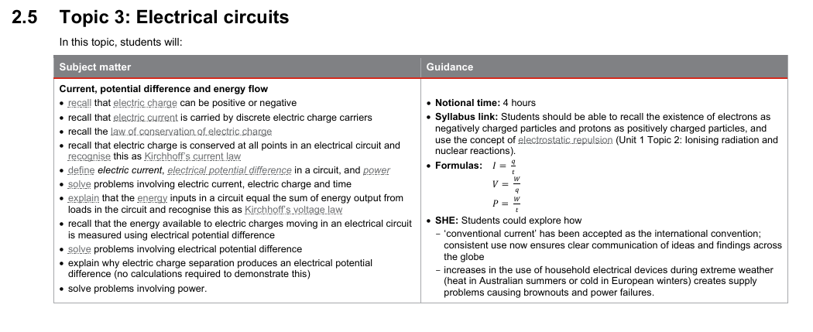

|  | Edith Clarke was a pioneer in both engineering (particularly electrical) and computing. After completing her study of mathematics and astronomy at Vassar College in 1908 Edith Clarke taught mathematics at a private school in San Francisco
before returning to the University of Wisconsin to study civil engineering. In 1918 Edith became the first woman to study electrical engineering at MIT leading her to work solving electrical power transmission line problems. Throughout she became the first woman to present a paper before the American Institute of Electrical Engineers for her work modelling large power systems, published a comprehensive text book for electical engineering students, became the first female electrical engineering professor in the US and was also the first woman to be elected a fellow of the Institute of Electrical and Electronic Engineers or IEEE. The work Edith did proved instrumental in the analysis of power transmission and the education of electrical engineers for many years after her retirement. As a result of her work Edith Clarke was inducted into the National Inventors Hall of Fame in 2015, unfortunately this wouldn't be until 56 years after her passing. |
 |

- Find out more about How Vis-Ability Started
- Return to Home